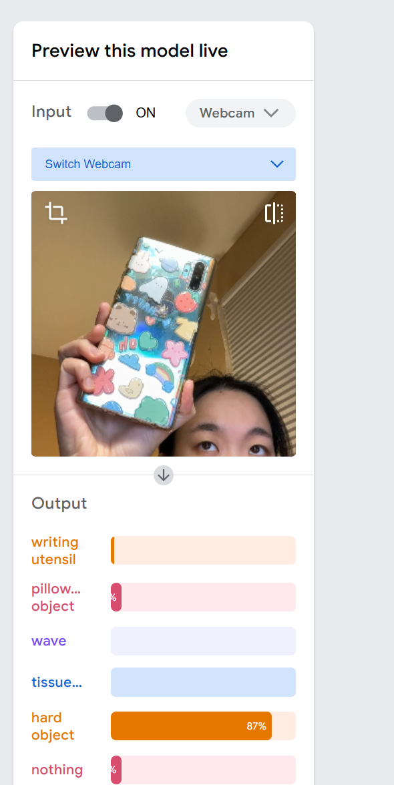
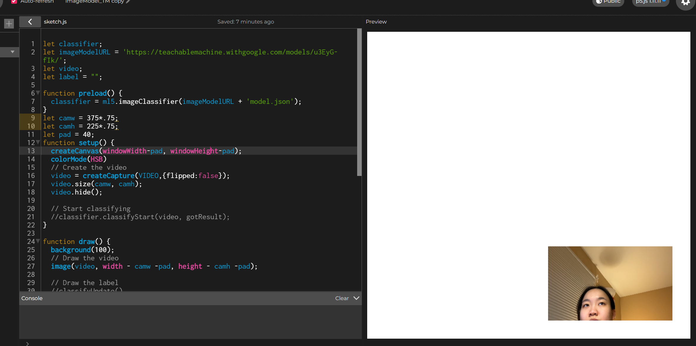
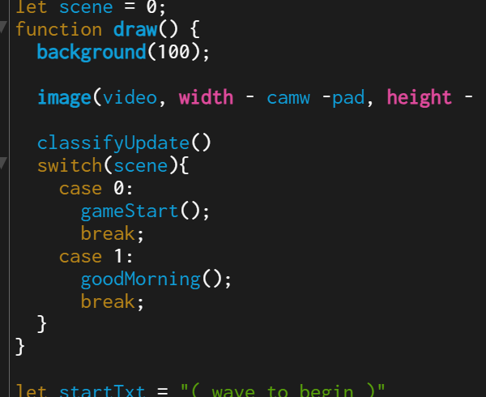
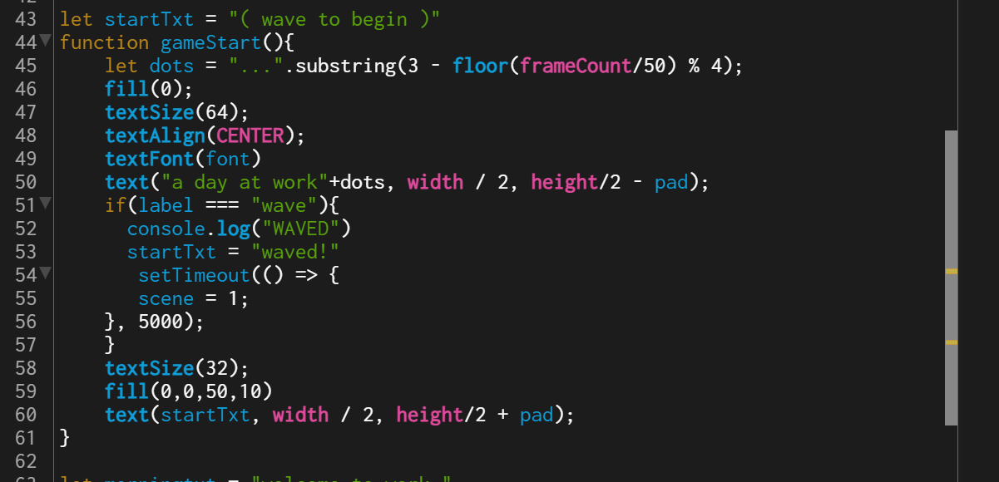
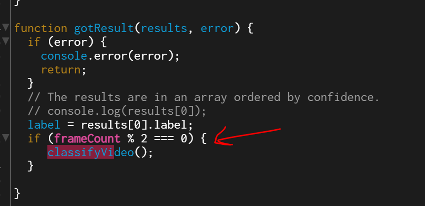

Find your interface! (First Prototype)
I wanted to make a video game based off object recognition in p5js- not a super serious game, a silly one. Here are the process images and notes!
I wanted to make a video game based off object recognition in p5js- not a super serious game, a silly one. Here are the process images and notes!
The goal is not to make a super serious game, but moreso a silly one by grabbing random objects and being able to use them inside the game.
It sort of takes advantage of the finnicky nature of the image recognizer- failed interactions are designed to happen... cause the results are funny. I often think this is one of the reasons why the concept of game is where one can practice design to its fullest potential, bad interactions don't have real consequences, or if anything, they are meant to frustrate the player. which is also funny.
I've never used teachable machine so here was my first try. It's nice to know i can simply go back and fix my model if need be (i will definitely be doing that).
Having made a game project before, I know it's kind of a pain but its totally doable. The hardest part... is learning how to integrate this damn camera without causing the whole site to lag. my god.
Here's how I code every game scene; each one will be a function, and in the draw function I will simply iterate a variable number so that these scene functions are on top of each other.
 And how I reduced lag- make classifyVideo run every other second instead of every second. It's shocking how much this improves the performance.
And that's it so far! Hopefully this is smooth sailing! The current version doesn't work super well, like for example the moment classifyVideo starts running it automatically detects a wave and sends you into the next scene. Not intended.